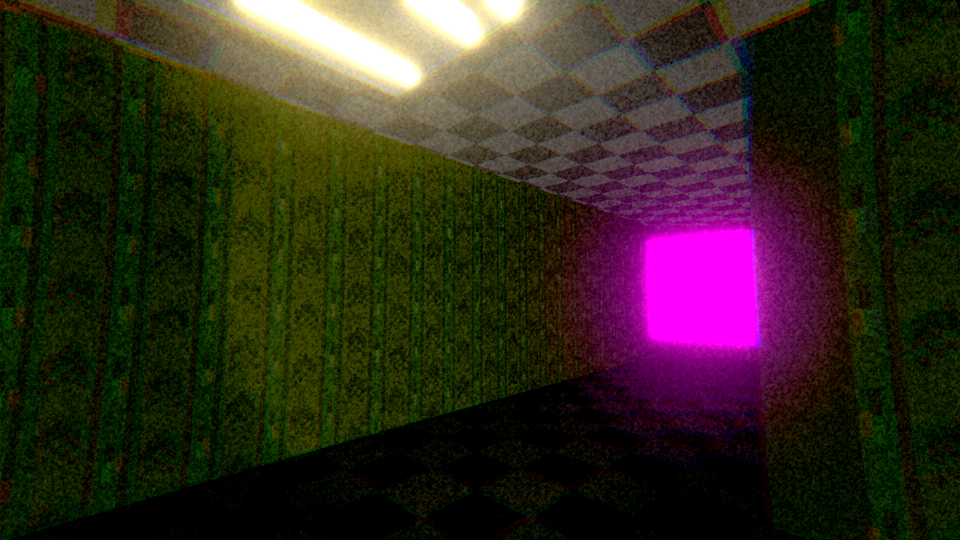

MazeRunner
Onemli olan bir labirentin içinde kaybolmak değil, onu cozmektir.
Umit Tasdelen · Unity 6 · C# · URPOyuncu bir labirente bırakılıyor.
Tek hedefi var: çıkışı en kısa sürede bulmak.
İlham: Backrooms
· keşfet.
· yönünü bul.
· karar ver.
Bu proje, labirent çözme deneyimini oyuncuya sunmayı amaçlıyor. İlham kaynağım, özellikle Backrooms gibi korku odaklı oyunlar oldu.
Oyuncunun labirentte kaybolma ve çıkışı bulma süreci, oyun tasarımında önemli bir yer tutuyor.
Geliştirme sürecinde, özellikle labirent algoritmalarının uygulanması ve oyuncu deneyiminin optimize edilmesi önemliydi.
Karşılaşılan zorluklar arasında çarpışma yönetimi, kamera açıları ve performans optimizasyonu yer aldı.
PlayerMovement scripti, oyuncunun labirentte hareket etmesini sağlar.
Oyuncu, klavye ok tuşları veya WASD tuşları ile hareket edebilir.
using UnityEngine;
public class PlayerMovement : MonoBehaviour
{
public float speed = 5f;
void Update()
{
float x = Input.GetAxisRaw("Horizontal");
float z = Input.GetAxisRaw("Vertical");
Vector3 movement = new Vector3(x, 0, z);
transform.Translate(movement.normalized * speed * Time.deltaTime, Space.World);
}
}Bütün macera burada başlıyor:
Oyuncu, labirentten çıkmak için mor küpü bulmalıdır.

İlginiz için teşekkürler!